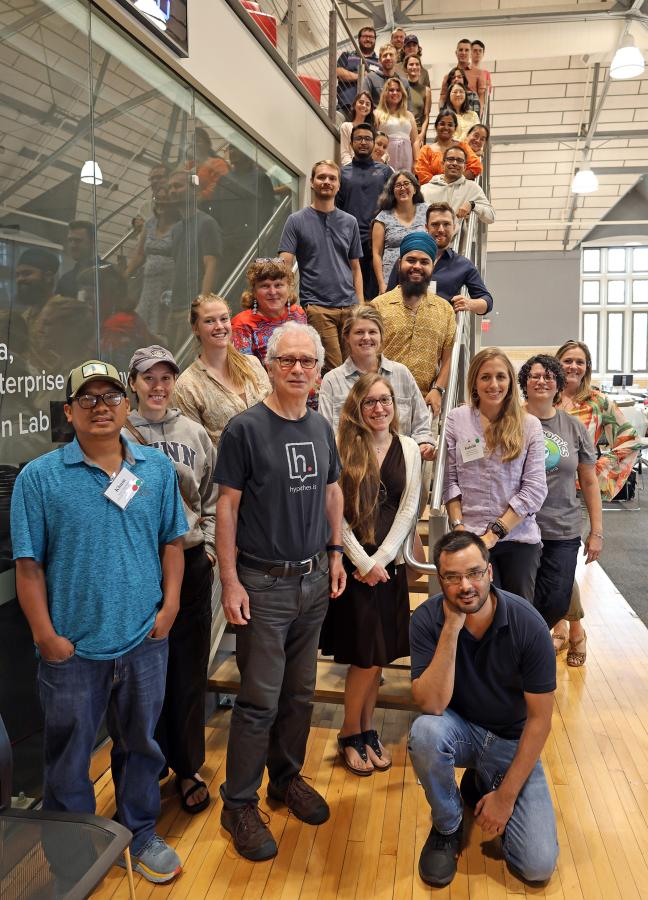

BeetlePalooza 2024, hosted by the Imageomics Institute from August 12-15, brought together a diverse group of scientists, ecologists, and AI/ML researchers to explore how machine learning could transform beetle biodiversity monitoring.
The workshop, held at The Ohio State University’s Pomerene Hall, aimed to automate data collection in ecological research, traditionally reliant on manual methods.
Participants worked on developing proof-of-concept tools to identify beetle species and extract trait measurements from over 11,000 beetle specimens collected by the National Ecological Observatory Network (NEON).
By utilizing AI, researchers sought to streamline the often-time-consuming process of species identification, which can take 15 to 30 minutes per beetle under current methods.
“This event is significant because we’re bringing together expertise from multiple disciplines—ecologists, biologists, and data scientists—to tackle a real-world problem,” said Hilmar Lapp, one of the event’s key organizers. “Typically, it takes up to 30 minutes for a human expert to identify a single beetle. With AI, we hope to significantly reduce that time while enhancing the accuracy of the data.”
Lapp emphasized that collaboration was at the heart of BeetlePalooza’s success.
“Workshops like this, where experts from different fields come together, create opportunities for new discoveries,” he said. “AI can assist human experts, making their work more efficient and accurate. I believe what we’ve accomplished here will ripple across the broader scientific community.”
Event participant and University of Florida Ph.D. student, Isadora Fluck, highlighted the potential impact on the future of ecological monitoring.
“As ecologists, we often struggle with collecting quality data across large scales. AI and machine learning are providing new methodologies that allow us to gather better data faster. Here, we’re working on processing images of beetles to extract measurements automatically, saving a lot of time and effort in future research,” she said. “With these tools, we can develop better workflows that don’t rely on manual measurement. It means higher-quality data and, ultimately, better research.”
The event aligns with NEON’s mission to advance ecological data collection and could set new standards for biodiversity monitoring on a global scale. BeetlePalooza 2024 marked an important step toward leveraging AI for conservation and ecological studies, sparking excitement about what’s next for AI-driven ecological research.